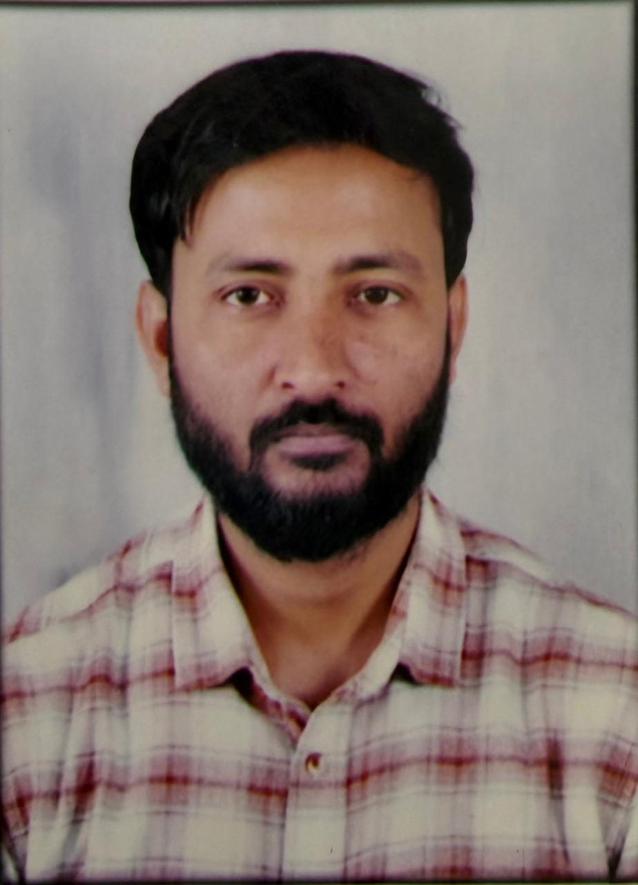
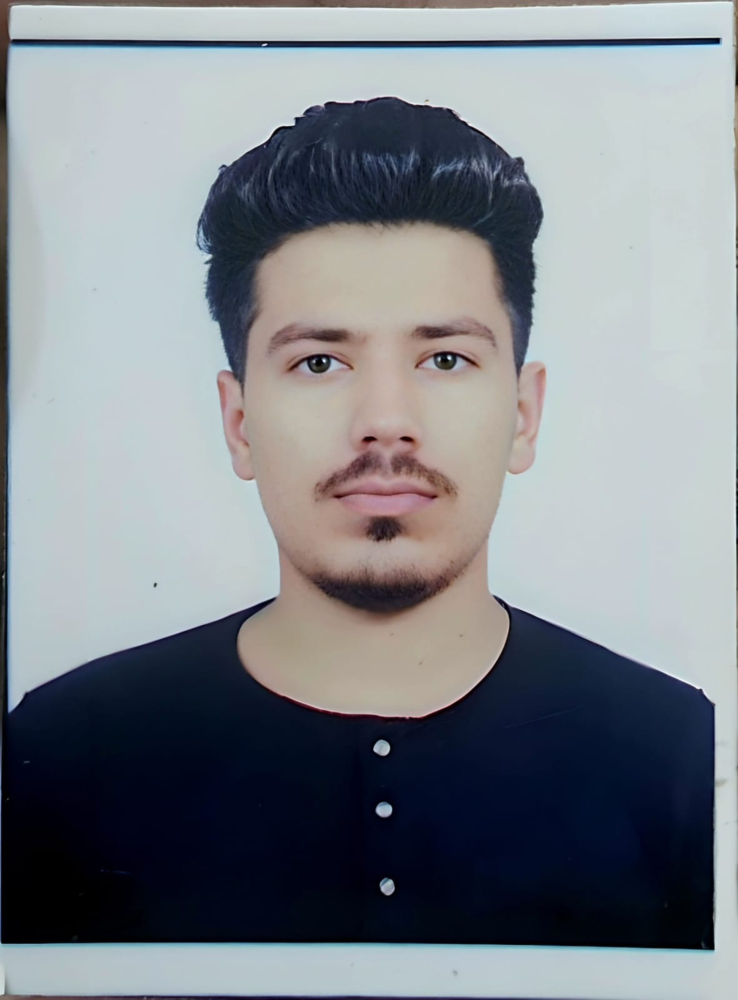
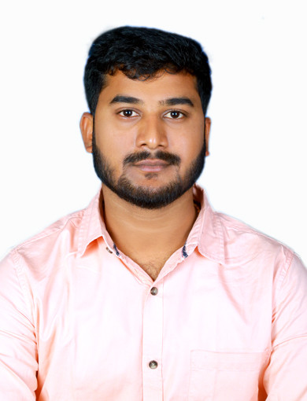
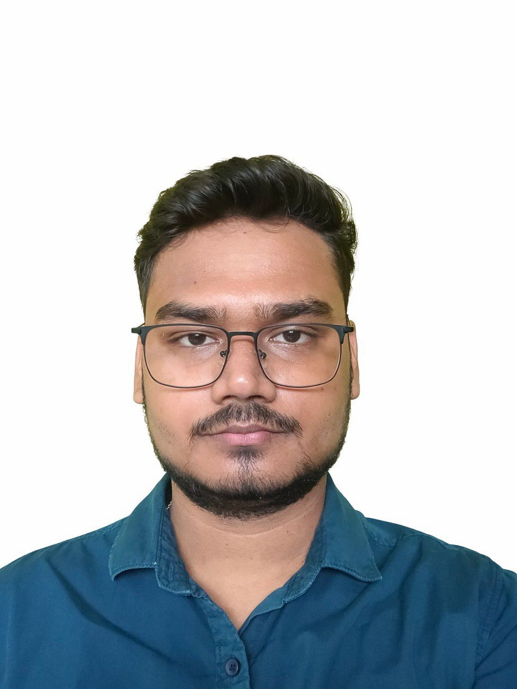
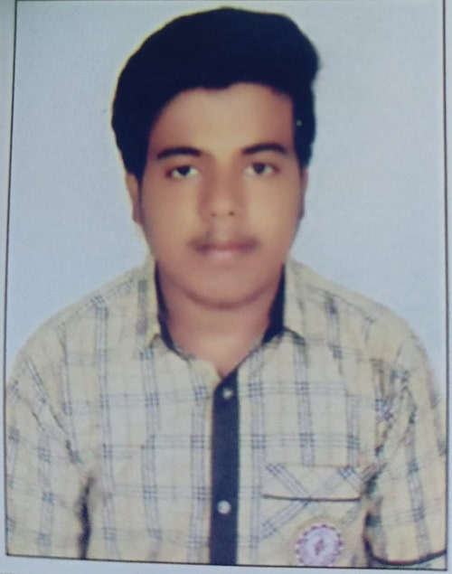
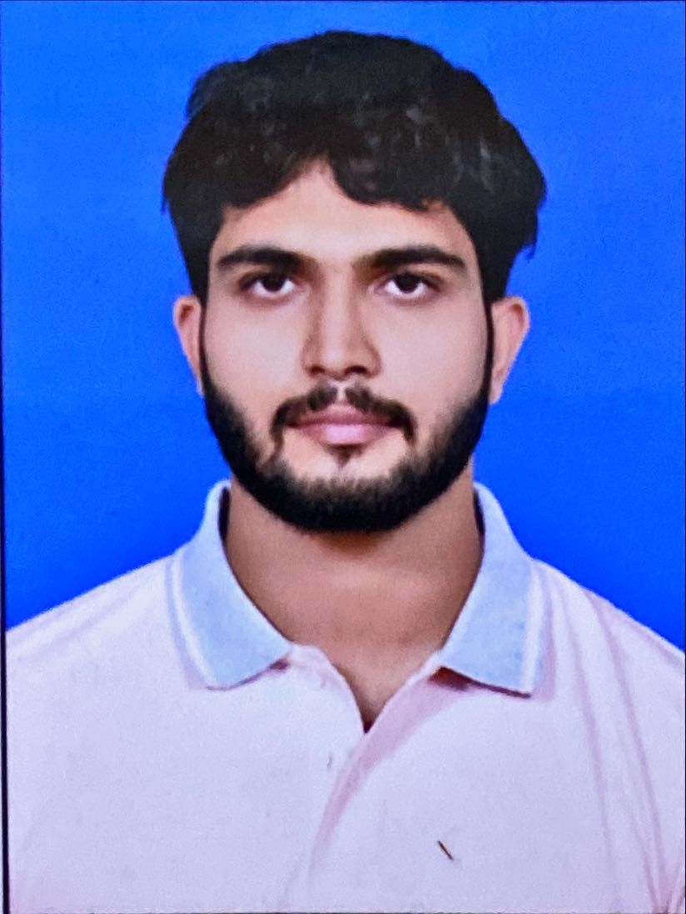
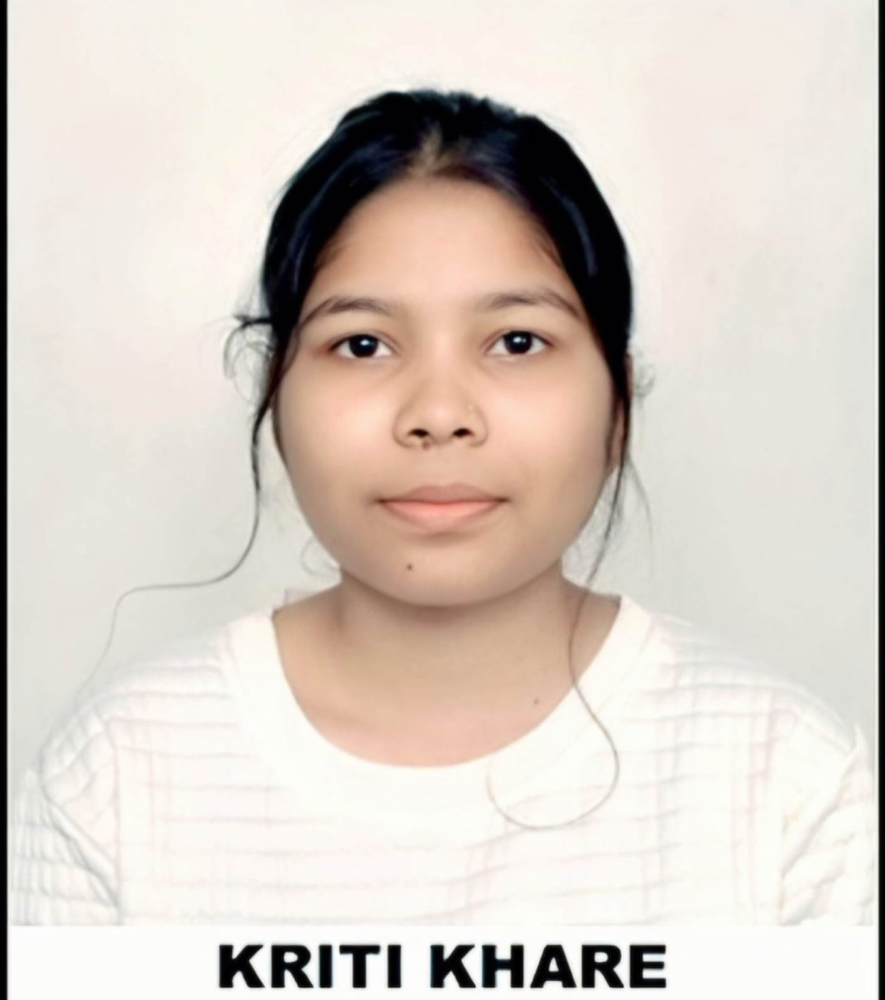

Dr. Nisha Singh Chauhan
Assistant Professor
Computer Science and Engineering Department
National Institute of Technology Delhi


Hello! I’m Dr. Nisha Singh Chauhan, currently working as an Assistant Professor in the Department of Computer Science and Engineering at the National Institute of Technology, Delhi. I hold a Ph.D. in Computer Science and Engineering from IIT Roorkee. Prior to that, I completed my M.Tech from IIT Patna and earned my B.Tech in Information Technology from REC Ambedkar Nagar (a State Government Engineering College).
My research aims to bridge the gap between computer science and traffic engineering, with a focus on building smarter, safer, and more sustainable urban mobility systems. I am passionate about continuing my work in this domain and warmly welcome enthusiastic and motivated students to join me in addressing real-world challenges.
I am actively seeking dedicated research scholars to join my research group. Interested candidates are encouraged to apply through the B.Tech, M.Tech, and Ph.D. programs via the NIT Delhi admission channel. For more details, please visit the official website: nitdelhi.ac.in.
My research focuses on intelligent transportation systems (ITS), with a particular emphasis on traffic flow prediction using deep learning models. I am especially interested in developing data-driven solutions for real-world transportation challenges in the Indian context, such as congestion, road safety, and anomaly detection. My broader aim is to bridge the gap between computer science and traffic engineering to enable smarter, safer, and more sustainable mobility systems.
Ph.D. Students

Research Area: Secure Biometric Systems
Year: 2025-Present
Research Area: UAV in ITS
Year: 2025-Present

Research Area: Neuro Symbiotic AI in ITS
Year: 2026-Present/p>

Research Area: Digital Twin in ITS
Year: 2026-Present

Research Area: Security in ITS
Year: 2026-Present
M.Tech Students
Research Area: Vision Language Models
Year: 2025-Present

Research Area: Traffic Congestion Detection
Year: 2025-Present

Research Area: Accident Detection
Year: 2025-Present

Research Area: ITS
Year: 2025-Present
MCA Students

Research Area: LLMs in ITS
Year: 2025-Present
Research Area: ITS
Year: 2025-Present
Autumn Semester 2025
Email: nishasingh@nitdelhi.ac.in
Office Address: CSE Department, Zone P1, National Institute of Technology, Plot No. FA7, GT Karnal Rd, Garthi Khurad, Bakoli, Delhi, 110036
Telephone: 011 -